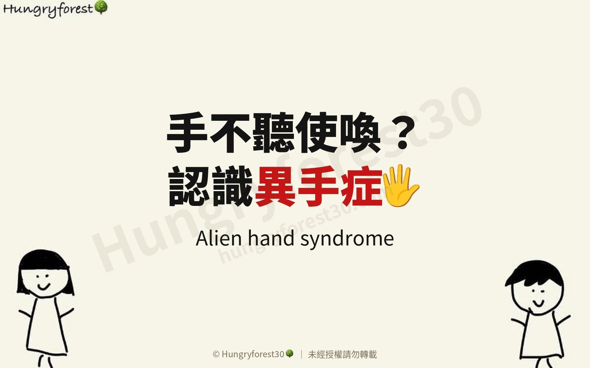
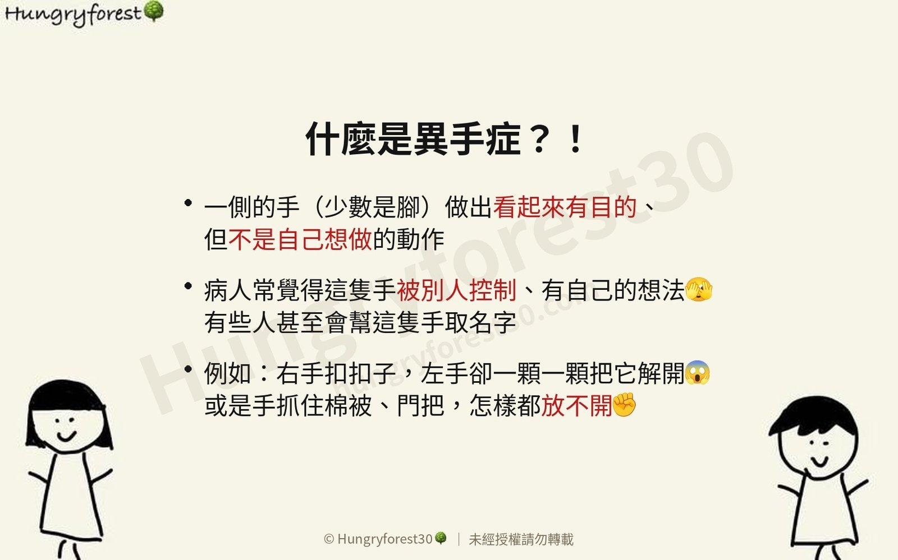
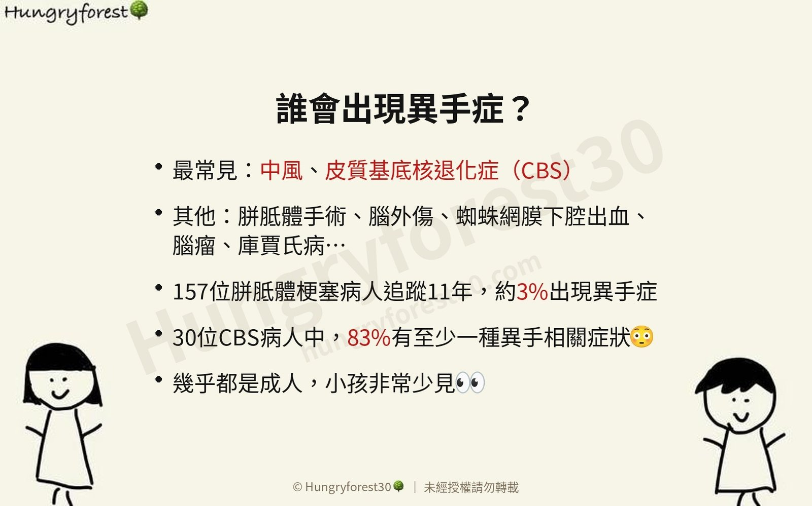
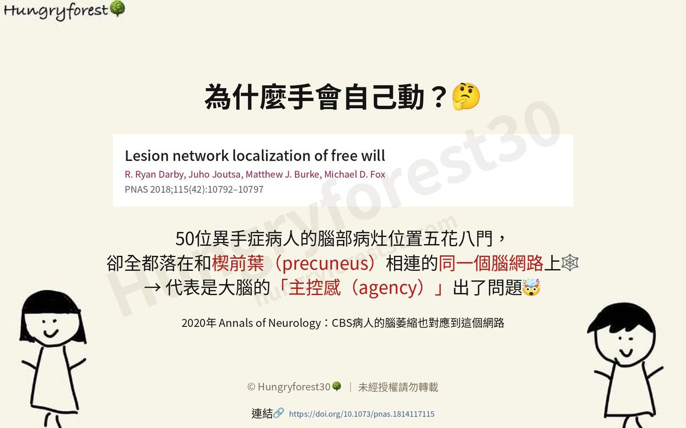
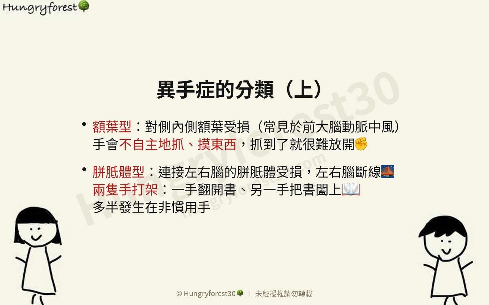
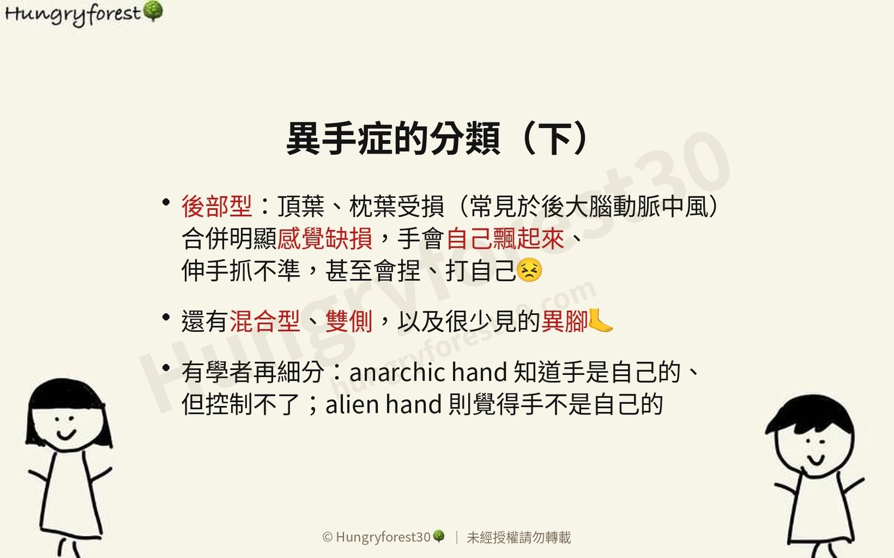
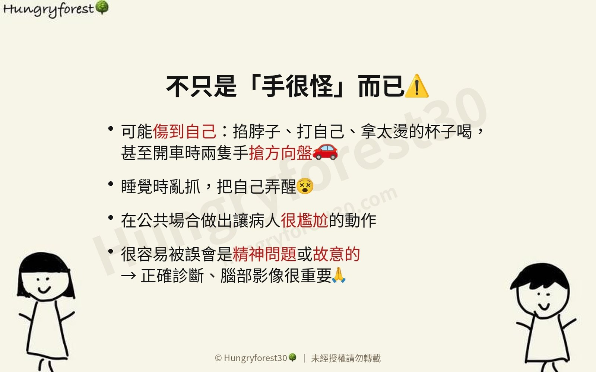
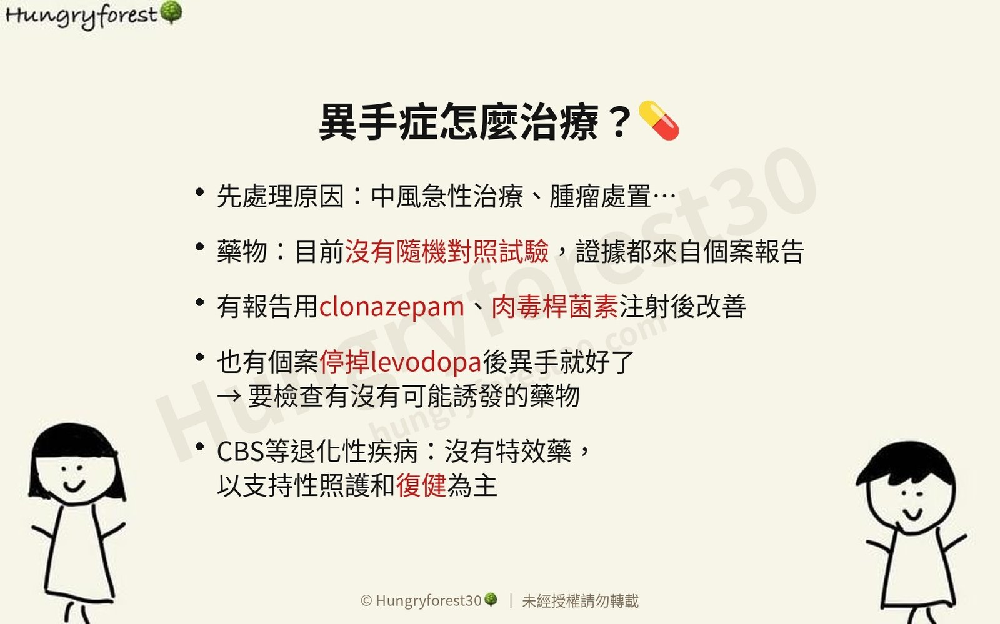
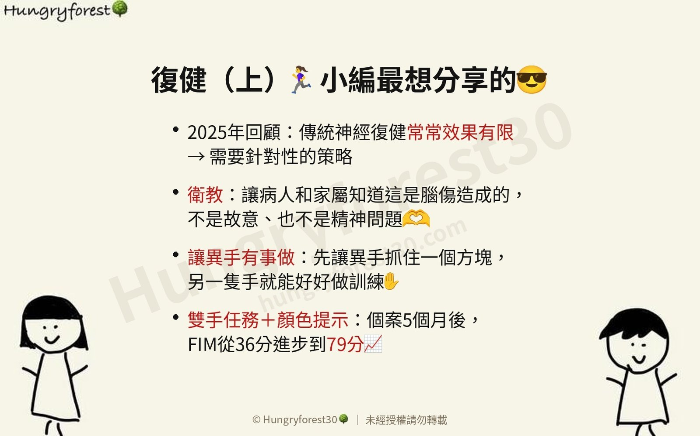
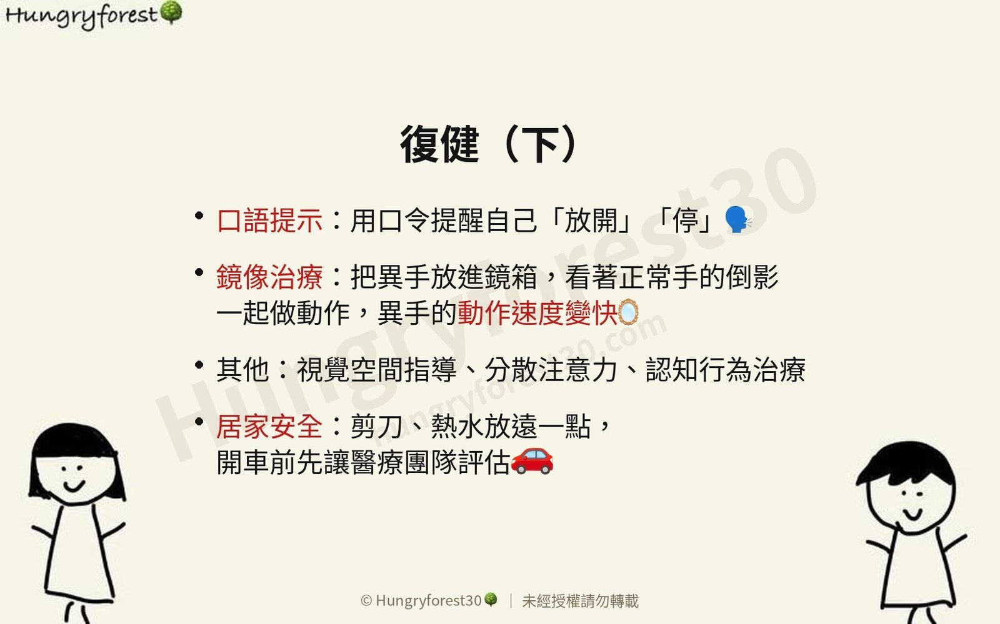
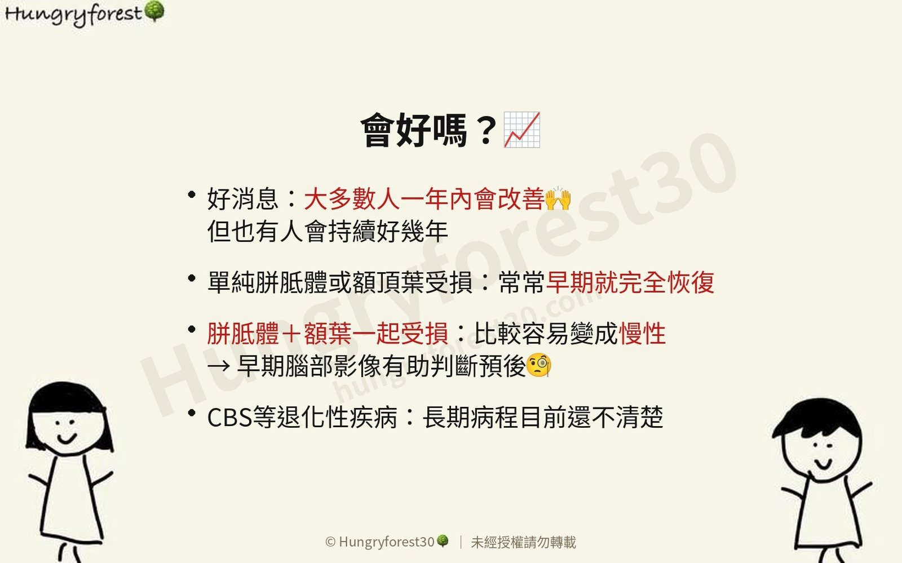
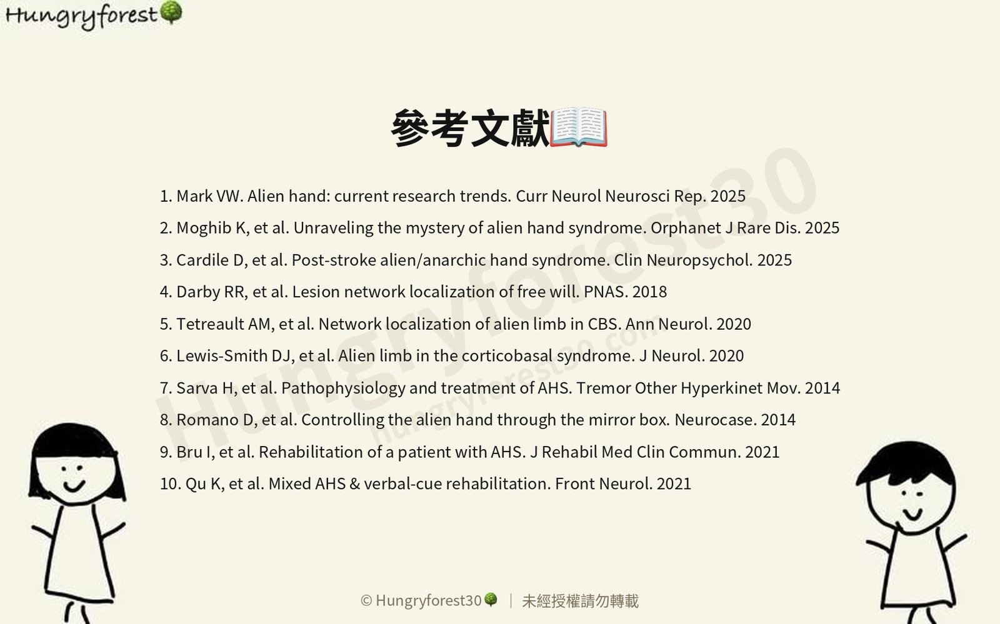
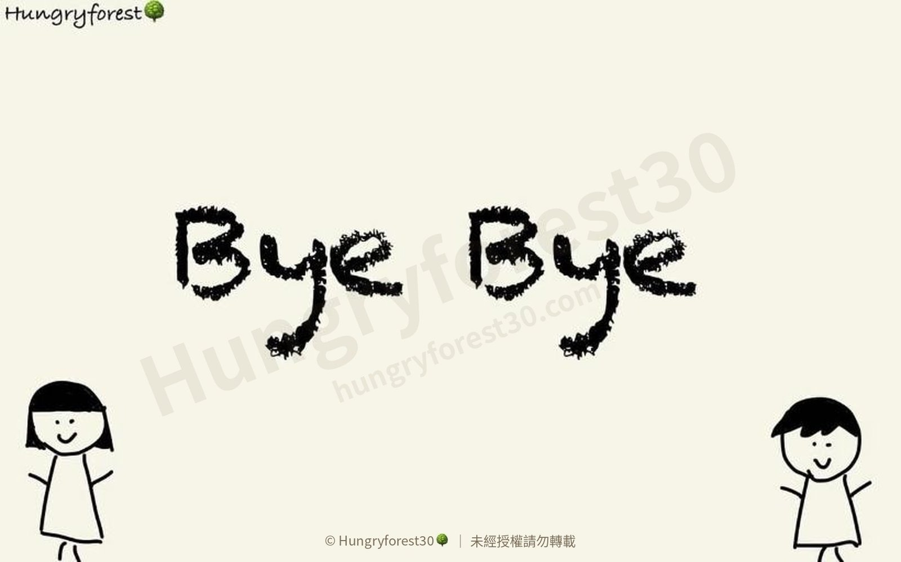
《醫學知識小分享》
🌟手不聽使喚？認識「異手症 Alien hand syndrome」🖐️🌟
想像一下：右手正在扣扣子，左手卻一顆一顆把它解開；或是手自己抓住棉被、門把，怎麼樣都放不開😱
這不是恐怖電影的情節，而是一種真實存在、但很少見的神經疾病——異手症（Alien hand syndrome，AHS）🧠
🖐️什麼是異手症？
異手症是指一側的手（少數是腳）做出「看起來有目的」、但不是病人自己想做的動作，病人常常覺得這隻手好像被別人控制、有自己的想法🫣 有些病人甚至會幫這隻手取名字！
它最常發生在中風之後，另一個常見原因是皮質基底核退化症（corticobasal syndrome，CBS）；其他像胼胝體手術、腦外傷、蜘蛛網膜下腔出血、腦瘤、庫賈氏病等也都有個案報告。幾乎都發生在成人，小孩非常少見👀
有研究追蹤 157 位胼胝體梗塞的病人 11 年，大約 3% 出現異手症；而在 CBS 病人身上更常見，一項 30 位 CBS 病人的研究中，有 83% 至少出現一種異手相關的症狀😳
🔍為什麼手會「自己動」？
我們覺得「這個動作是我做的」，其實可以拆成兩件事：想要做（volition），以及覺得是自己在控制（agency，主控感）。
2018 年 PNAS 的研究分析了 50 位異手症病人的腦部病灶，發現雖然病灶位置五花八門，但全部都落在同一個和「楔前葉（precuneus）」相連的腦網路上🕸️ 2020 年 Annals of Neurology 的研究也發現，CBS 病人有沒有異手症，和腦萎縮是否落在這個網路上有關。
所以異手症比較像是大腦「主控感」的網路壞掉了，手還是能做出完整的動作，只是大腦不覺得是「我」叫它做的🤯
📚異手症的分類
目前最常用的是三型分類👇
1️⃣額葉型（frontal）
病灶在對側內側額葉（例如輔助運動區），常見於前大腦動脈中風。手會不自主地抓、摸東西，抓到了就很難放開，例如一直抓著棉被、門把不放✊ 慣用手、非慣用手都可能發生。
2️⃣胼胝體型（callosal）
胼胝體是連接左右腦的橋樑🌉 受損後左右腦溝通斷線，最經典的表現是「兩隻手打架」（intermanual conflict）：一隻手翻開書、另一隻手把書闔上；一隻手扣釦子、另一隻手解開，多半發生在非慣用手。
3️⃣後部型（posterior）
病灶在頂葉、枕葉，常見於後大腦動脈中風，通常合併明顯的感覺缺損。手會自己飄起來（levitation）、伸手拿東西時抓不準，甚至會捏或打自己的身體；情緒激動時症狀會更明顯😣
另外也有混合型（同一個病人有不只一型的表現）、雙側異手，以及很少見的「異腳」🦶
也有學者會再區分「anarchic hand」（知道手是自己的，但控制不了）和「alien hand」（覺得手不是自己的），兩者的病灶位置不太一樣。
⚠️不只是「手很怪」而已
異手症可能造成真正的危險：有病人的手會掐自己脖子、打自己、去拿剪刀、拿太燙的杯子來喝，甚至開車時跟另一隻手搶方向盤🚗 也可能在睡覺時亂抓、把自己弄醒，或在公共場合做出讓病人很尷尬的動作。
而且因為表現太奇特，很容易被誤以為是精神科問題或是「故意的」，所以正確診斷（包含腦部影像）很重要🙏
💊治療
✅先處理原因：例如中風的急性治療、腫瘤的處置。
✅藥物：目前沒有隨機對照試驗，證據都來自個案報告。有報告使用 clonazepam、肉毒桿菌素注射後症狀改善；也有個案在停掉 levodopa 之後異手就好了，所以也要檢查有沒有可能誘發的藥物💊
✅CBS 等神經退化疾病造成的異手症，目前沒有特效藥，以支持性照護和復健為主。
🏃♀️復健（復健科小編最想分享的部分😎）
2025 年的回顧文章也坦白說，傳統的神經復健對異手症常常效果有限，所以需要一些「針對性」的策略👇
1️⃣衛教病人和家屬：讓大家知道這是腦傷造成的，不是故意、也不是精神問題，可以大大減少病人的焦慮和尷尬🫶
2️⃣讓異手「有事做」：比利時一個中風後額葉型異手的個案，讓異手先抓住一個方塊，另一隻手就能好好做單手訓練✋
3️⃣雙手任務＋視覺提示：同一個個案用雙手一起做的任務，再搭配黑、白和鮮豔顏色引導注意力，5 個月後功能獨立評估（FIM）從 36 分進步到 79 分📈
4️⃣口語提示（verbal cue）：用口令提醒自己「放開」「停」，在胼胝體＋額葉混合型的個案報告中效果不錯🗣️
5️⃣鏡像治療（mirror box）：把異手放進鏡箱裡，看著鏡子中正常手的倒影一起做動作，讓「想做的」和「看到的」一致，研究中病人異手的動作速度變快🪞
6️⃣其他：視覺空間指導、分散異手的注意力、認知行為治療等也有成功的報告。
7️⃣居家安全：把剪刀、熱水等危險物品放遠一點，開車前也要先經過醫療團隊評估🚗
📈預後
好消息是，大多數病人在一年內會改善🙌 不過也有人會持續好幾年。2025 年的系統性回顧發現，只有胼胝體或額頂葉單一部位受損的病人，常常早期就完全恢復；而胼胝體合併額葉／額頂葉一起受損的病人，比較容易變成慢性，所以早期的腦部影像對判斷預後很有幫助🧐
至於 CBS 這類退化性疾病，異手症的長期病程目前還不太清楚。
以上是小編對異手症的小小分享😚 如果身邊有人中風後出現「手不聽話」的狀況，記得跟醫療團隊討論，早點找到原因、早點開始復健喔💪
📖參考文獻
- Mark VW. Alien Hand: Current Research Trends. Curr Neurol Neurosci Rep. 2025;25:63.
- Moghib K, et al. Unraveling the mystery of alien hand syndrome: when your hand has a mind of its own. Orphanet J Rare Dis. 2025;20:503.
- Cardile D, et al. Post-stroke disorders of ownership and agency, alien/anarchic hand syndrome: a longitudinal case analysis and systematic review. Clin Neuropsychol. 2025.
- Darby RR, et al. Lesion network localization of free will. PNAS. 2018;115(42):10792–10797.
- Tetreault AM, et al. Network localization of alien limb in patients with corticobasal syndrome. Ann Neurol. 2020;88(6):1118–1131.
- Lewis-Smith DJ, et al. Alien limb in the corticobasal syndrome: phenomenological characteristics and relationship to apraxia. J Neurol. 2020.
- Sarva H, et al. Pathophysiology and treatment of alien hand syndrome. Tremor Other Hyperkinet Mov. 2014;4:241.
- Romano D, et al. Controlling the alien hand through the mirror box. Neurocase. 2014;20(3):307–316.
- Bru I, et al. Rehabilitation of a patient with alien hand syndrome: a case report of a 61-year old man. J Rehabil Med Clin Commun. 2021;4:1000050.
- Qu K, et al. Good prognosis of mixed alien hand syndrome by verbal-cue rehabilitation exercise. Front Neurol. 2021;12:718706.
文章連結🔗：
https://doi.org/10.1073/pnas.1814117115
認識小編